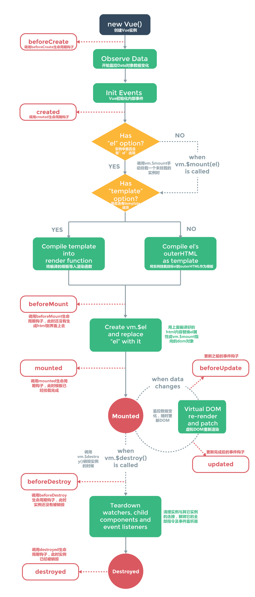
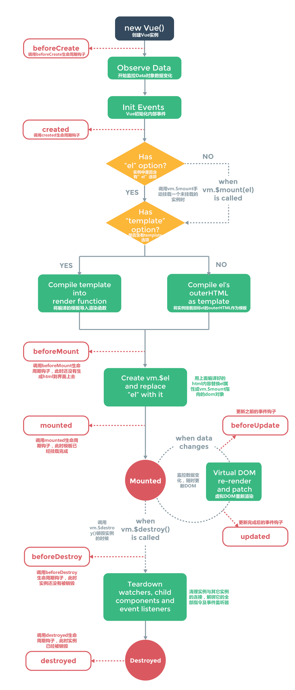

* 如果使用构建步骤（比如单文件组件），模块编译将会在此之前执行。
来自官方文档的注意：
不要在选项属性或回调上使用箭头函数，比如 created: () => console.log(this.a) 或 vm.$watch('a', newValue => this.myMethod())。
因为箭头函数是和父级上下文绑定在一起的，this 不会是如你所预期的 Vue 实例，经常导致 Uncaught TypeError: Cannot read property of undefined 或 Uncaught TypeError: this.myMethod is not a function 之类的错误。
{{ message }}